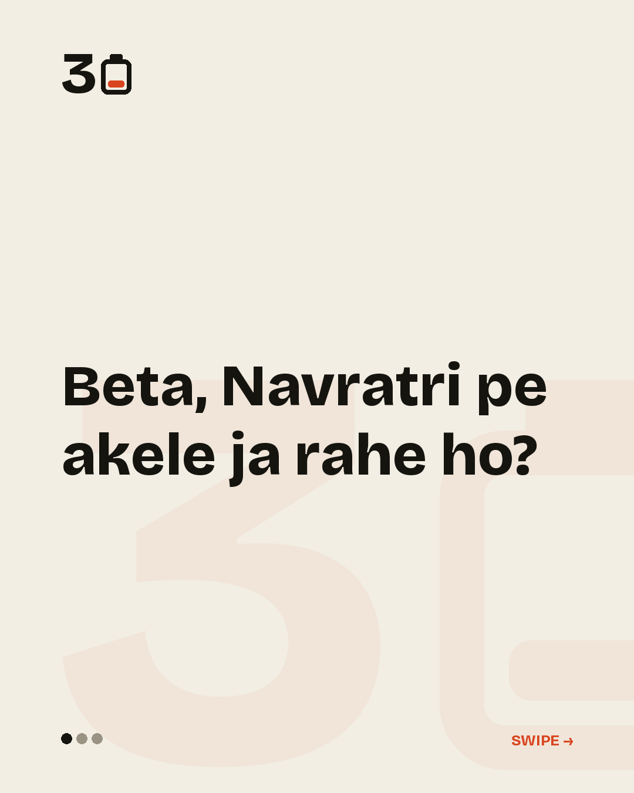
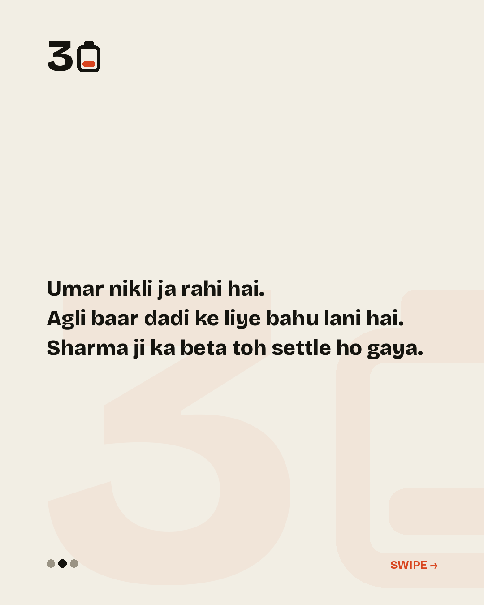

Likes run at 25% of reach on carousels against 6.2% on reels, and nothing has been saved yet.
Weekly average reach, by format
14 Sep
21 Sep
28 Sep
5 Oct
reelcarouseltallest 50
Per post
42 posts have a first-day number. Best g011 reached 122, worst g044 reached 3, median 12.
How long reels are watched
Reels are watched 5.2s on average (median 4.1s). Correlation with reach is -0.39 — the reels watched longest reached fewest, because average watch time is per play and a cold audience swipes. Not a target yet.
Today’s candidates
Your definition of 'prime location' has collapsed.then_now · satire 3
"Bro, office ke paas room lene se life set ho gayi hai."dialogue · satire 4 · hinglish
g041 · terms_and_conditions · satire 4 Renting out basic human connection and validation under structural pricing plans.
published


g040 · dialogue · satire 5 · hinglish Renting a fake partner to escape parental pressure only exposes them to corporate scrutiny from uncles.
published
g039 · whatsapp_forward · satire 3 Saving fitness videos has become the modern substitute for actually exercising.
published
g038 · customer_support · satire 4 Treating basic physiological decay with the administrative gravity of a customer help desk.
published
g037 · phone_call · satire 3 · hinglish Navigation apps tell us we are moving when we have actually integrated into the local ecosystem of the crossing.
g036 · terms_and_conditions · satire 4 Corporate systems track your laptop activity to the second, while ignoring the hours lost to absolute structural collapse outside the office gates.
published
g035 · then_now · satire 3 You didn't develop a sophisticated palate; your liver simply started issuing terms and conditions.
published
g034 · group_chat · satire 3 · hinglish Social outings are no longer about showing up; they are about avoiding noise and sitting down.
g033 · escalating_list · satire 3 The gym is no longer about looking good or looking healthy. It is a repayment plan for the damage done in your early twenties.
published
g032 · dialogue · satire 5 · hinglish The metro line does not improve your transit; it merely justifies your landlord's next appraisal cycle.
published
g031 · two_aunties · satire 4 The real estate industry uses lifestyle vocabulary to mask basic housing scarcity.
g030 · dialogue · satire 4 · hinglish The comedy is the sheer discrepancy between the trivial nature of the action and the violence of the physical consequence.
published
g029 · whatsapp_forward · satire 4 · hinglish The older generation's paranoia about digital money is beginning to look like sound financial planning.
published
g028 · interview · satire 3 The office environment systematically destroys the spine while prescribing hydration and breathing breaks as the cure.
g017 · escalating_list · satire 4 · hinglish No matter how carefully you calculate your savings, the infrastructure of the transaction is designed to eat the margin.
g016 · juxtaposition · satire 3 You are not an active market participant; you are a captive source of micro-transaction fees for platforms that never lose money.
published
g015 · dialogue · satire 4 · hinglish Your parents view your attempts at intense adult fitness as a reckless endangerment of the body they spent decades trying to feed.
g014 · terms_and_conditions · satire 4 Adulthood in India is a series of tiny, unavoidable tolls where 'free forever' was actually just a trial period.
g013 · dialogue · satire 4 · hinglish The older generation's belief in institutional brand names is entirely incompatible with modern algorithmic hiring.
published
g012 · job_description · satire 3 Hybrid fitness competitions are designed specifically to exploit corporate anxiety by turning manual labor into a premium hobby.
published
g011 · then_now · satire 4 The institutional brands that you spent your youth competing to enter have been reduced to content pieces for job boards.
published
g010 · customer_support · satire 4 HR departments have built automated screens so efficient that actual human capability has become an administrative error.
published
g009 · then_now · satire 4 Adulthood in a metro is just upgrading the camera you use to photograph a life that hasn't changed.
published
g008 · receipt · satire 3 Your monthly expenses are an index of different brands that own pieces of your time.
published
g007 · juxtaposition · satire 4 The body at 30 doesn't care about your appraisal cycle; it's running its own financial year.
published
g006 · escalating_list · satire 4 The modern cost of living is split between keeping yourself alive and keeping your feed looking premium.
published
g005 · dialogue · satire 3 · hinglish Your mother's daily check-in call undergoes a subtle but terrifying shift from emotional to medical.
published
g004 · definition_drift · satire 3 What was once a simple treat becomes an active financial threat to your future.
published
g003 · then_now · satire 4 Your employer is offering you basic survival standards as an office perk.
published
g002 · receipt · satire 3 Having a child converts emergency parenting into an expensive series of 10-minute delivery notifications.
g001 · then_now · satire 4 Our parents built permanent lives with heavy steel; we rent a temporary existence that can be repossessed if our card declines.
published
p012 · definition_drift · satire 2 You didn't lose interest. There is simply more cricket than a life has room for.
p011 · escalating_list · satire 3 Pain used to be earned. Now it just arrives.
p010 · dialogue · satire 2 · hinglish You run an entire household and still file a daily report you cannot pass.
p009 · escalating_list · satire 3 Childhood festivals were received. Adult festivals are budgeted.
p008 · escalating_list · satire 3 Infrastructure is allowed to fail. You are not.
p007 · list_collapse · satire 3 · hinglish These aren't lies to other people. They are a maintenance protocol.
p006 · juxtaposition · satire 3 Your landlord runs a faster, more confident compensation cycle than your employer.
p005 · escalating_list · satire 3 You are inside the growth. You are receiving none of it.
p004 · escalating_list · satire 5 · hinglish Adjustment was sold as resilience. Thirty years of it is not resilience, it is deformation.
p003 · definition_drift · satire 4 · hinglish It is not a destination. It is a moving target, and it has never once been reached by anybody.
p002 · escalating_list · satire 4 The company never deleted the promise. It just stopped honouring it, and left the evidence online.
p001 · escalating_list · satire 4 Follow a single note through one ordinary evening and count the tolls. Nothing has even been consumed yet.